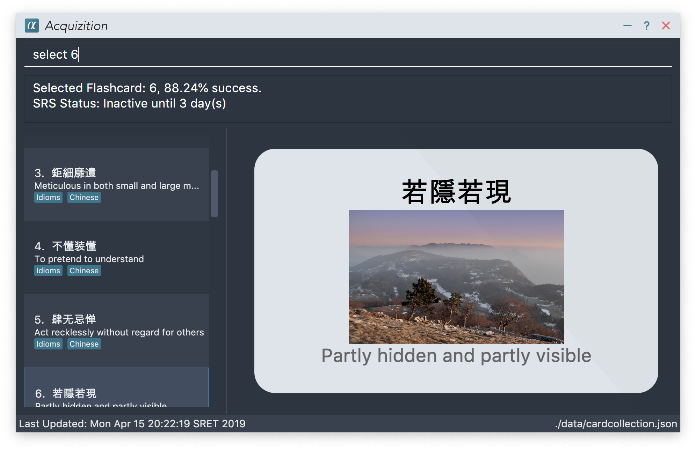

By: Team T12-2 Since: Feb 2019 Licence: MIT
- 1. Introduction
- 2. Quick Start
- 3. Features (Collection)
- 3.1. How do I add a flashcard?
- 3.2. How do I add a flashcard with an image?
- 3.3. How do I delete a flashcard?
- 3.4. How do I delete all flashcards at once?
- 3.5. How do I edit a flashcard?
- 3.6. How do I import an image?
- 3.7. How do I insert an image to a flashcard?
- 3.8. How do I remove an image from a flashcard?
- 3.9. How do I insert tags to a flashcard?
- 3.10. How do I remove tags from a flashcard?
- 3.11. How do I restore all the flashcards to the currently-visible list?
- 3.12. How do I undo the most recent command?
- 3.13. How do I redo the most recent undone command?
- 3.14. How do I discard the results of the most recent quiz session?
- 3.15. How do I see the list of commands I have made?
- 3.16. How do I exit Acquizition?
- 3.17. What if I want to bring up this document again?
- 3.18. Finding flashcards by keyword(s):
find - 3.19. Selecting a flashcard :
select - 3.20. Showing aggregate statistics :
stats - 3.21. Exporting flashcards to a text file :
share - 3.22. Importing flashcards from a text file :
import
- 4. Features (Quiz)
- 5. FAQ
- 6. Command Summary
1. Introduction
Hey there!
Acquizition is a desktop app for easy language acquisition using flashcards. It analyzes your performance on recalling words or phrases, and, based on how well you do, decides which word or phrase to show you next to maximize learning.
Additionally, Acquizition provides you with a user-friendly Graphical User Interface (GUI) to view your flashcards. It even supports images on the flashcards to make them more memorable. If you can type quickly, you will surely also enjoy the Command-Line Interface (CLI), streamlined for users like you.
This user guide begins with an in-depth documentation on the Acquizition installation process. We structured the user guide to cater to your needs by explaining common use cases, rather than simply giving a list of commands and command formats.
Of course, you can still access the concise command summary at the end of this document if you need it for reference.
Time is money, so jump to Section 2, “Quick Start” to get started immediately.
We hope you enjoy Acquizition, and we wish you the best in your language studies!
2. Quick Start
-
Make sure that you have Java 9 or later installed on your computer.
-
On Windows 10, you can check your Java version by searching for Apps & features and looking for Java.
-
On Mac OS X 10.7 (Lion) and above, you can check your Java version by searching for System Preferences and looking for the Java icon, then clicking on it.
-
This process may be different on other operating systems. Please search online for the relevant process.
Note: If you do not have Java installed, or your version is outdated, you can download the latest version by following the instructions here.
-
-
Download the latest
acquizition.zipfile here. -
Copy the downloaded
acquizition.zipfile to the directory of your choice, and extract theacquizition.zipfile there.Tip: Most operating systems should have built-in support for extracting .zipfiles. The process may differ between operating systems. Please search online for the relevant process. -
Locate the
acquizition.jarfile and double-click it to start Acquizition. The app should appear on your screen in a few seconds.Tip: If you do not see anything after a few seconds, you may need to open Acquizition through the command line. To do this, open the Command Prompt, Terminal or Linux Shell. Then, type cd, followed by a space, followed by the directory of the folder containingacquizition.jar, and press Enter. Then, typejava -jar acquizition.jar, and press Enter. The app should appear on your screen in a few seconds. -
Try typing the following commands. Press Enter after typing a command to tell Acquizition to execute it.
Note: Commands are case-sensitive: please type the commands exactly as shown! -
add f/Kamusta b/Hello t/Tagalog: Creates a flashcard with Kamusta on the front and Hello on the back, with the tag Tagalog. -
add f/Terima kasih b/Thank you t/BahasaIndonesia: Creates a flashcard with Terima kasih on the front and Thank you on the back, with the tag Bahasa Indonesia. -
find b/Thank you: lists all flashcards whose back face shows Thank you. -
delete 2: deletes the second flashcard in the collection. -
exit: exits the app.
-
-
Refer to Section 3, “Features (Collection)” and Section 4, “Features (Quiz)” for the detailed descriptions of each command.
3. Features (Collection)
Command Format
-
Words in
UPPER_CASEshould be substituted by you!-
Example: In
add f/FRONT_TEXT b/BACK TEXT,FRONT_TEXTandBACK_TEXTshould be replaced to, say,KamustaandHello. So, you could writeadd f/Kamusta b/Hello.
-
-
Words in
[square brackets]are optional.-
Example: In
add f/FRONT_TEXT b/BACK_TEXT [i/IMAGE_PATH],IMAGE_PATHis optional. You can replace it with, say,add f/Babae b/Woman i/images/woman.png.
-
-
Words with
…after them can be specified multiple times.-
Example: In
add f/FRONT_TEXT b/BACK_TEXT [t/TAG]…,TAGis optional and you can specify multiple tags. You can replace it with, say,add f/Lalaki b/Man t/Tagalog t/Noun.
-
-
You can specify the parameters in any order; if the command specifies
f/FRONT_TEXT b/BACK_TEXT, you can also type them in the orderb/BACK_TEXT f/FRONT_TEXT.
3.1. How do I add a flashcard?
You can add a flashcard by using the add command.
Type add f/FRONT_TEXT b/BACK_TEXT [i/IMAGE_NAME] [t/TAG]… into the command box and
press Enter.
The FRONT_TEXT is the prompt you see, and the BACK_TEXT is what you need to recall.
Tip: A flashcard can optionally have a single image on its front face. You should specify this
image through the use of the IMAGE_NAME, which is the name of your image (with the extension)
after importing it through the image command.See Section 3.2, “How do I add a flashcard with an image?” for more details. |
Tip: Although tags are not strictly required, we highly recommend using them, especially if you intend
to study multiple languages. Most of the other features in Acquizition are compatible with
working with specific tags. For example, if you are learning both Chinese and Japanese and want to
study only the Chinese flashcards, you can do that if you have tagged all the Chinese flashcards with, for
example, t/Chinese.
|
Note: Tags must be alphanumeric; in particular, they cannot contain spaces. For example,
t/Bahasa Indonesia is forbidden; use t/BahasaIndonesia instead.
|
Examples:
-
add f/Kamusta b/Hello t/Tagalog
This adds a flashcard whose front face is Kamusta, whose back face is Hello, and has the tag Tagalog. -
add f/さようなら b/Goodbye i/goodbye.jpg t/Japanese t/Greetings
This adds a flashcard whose front face is さようなら, whose back face is Goodbye, has the imagegoodbye.jpgon its front face, and has the tags Japanese and Greetings.
3.2. How do I add a flashcard with an image?
Acquizition uses a local storage system to store your images. This means that to add an image, you first need to import it into Acquizition. This benefits you, because that means once you add an image to Acquizition, you can move or even delete the original image and Acquizition will still have a copy of your image!
To import an image, you can use the image command.
Type image IMAGE_PATH into the command box and press Enter.
Tip: What is an IMAGE_PATH? It is the absolute path to your image. For example, if you
have an image called everest.jpg on your Desktop, the IMAGE_PATH might be C:\Users\Robin\Desktop\everest.jpg.On Windows, you can get the absolute path by right-clicking on the image, selecting Properties, and copying the path under Location:. Then, append a backslash and the image filename (with the extension) to the end. In the image above, we see that the path under Location: is C:\Users\Robin\Desktop. We append a backslash \
and the image filename everest with the extension .jpg to get the IMAGE_PATH which is
C:\Users\Robin\Desktop\everest.jpg.This process may be different on other operating systems. Please search online for the relevant process. |
After importing an image into Acquizition, you can now directly refer to the imported image by the filename (with the extension).
Type add f/FRONT_TEXT b/BACK_TEXT i/IMAGE_NAME [t/TAG]… into the command box and
press Enter. IMAGE_NAME is the filename of the image you just imported.
Example:
-
-
image C:\Users\Robin\Desktop\everest.jpg
This imports the image located atC:\Users\Robin\Desktopinto Acquizition, as previously described. -
add f/珠峰 b/Mount Everest i/everest.jpg t/Chinese
This adds a flashcard whose front face is 珠峰, whose back face is Mount Everest, has the imageeverest.jpg(which we just imported) on its front face, and has the tag Chinese.
-
3.3. How do I delete a flashcard?
You can delete a flashcard by using the delete command.
Type delete INDEX and press Enter.
Note that INDEX refers to the number of the card on the currently-visible list. This is the list
you see on the left-side panel.
Example:
-
delete 3
This deletes the third flashcard.
3.4. How do I delete all flashcards at once?
If, for whatever reason, you want to delete all the flashcards at once, you can do so using the clear command.
Type clear and press Enter.
3.5. How do I edit a flashcard?
You can edit a flashcard by using the edit command.
Type edit INDEX [f/FRONT_TEXT] [b/BACK_TEXT] [i/IMAGE_NAME] [t/TAG]… into the command box and
press Enter.
Note that INDEX refers to the number of the card on the currently-visible list. This is the list
you see on the left-side panel.
You must specify at least one of [f/FRONT_TEXT], [b/BACK_TEXT], [i/IMAGE_NAME], and [t/TAG],
and you can specify more than one. The edit command will change only the specified items, and leave
all the others unchanged.
Note: When specifying one or more TAG(s), all existing tags will be removed. If you want to add a new tag,
you must restate all the previous tags and add the new one.
|
Note: For more information about the IMAGE_NAME, see Section 3.2, “How do I add a flashcard with an image?”.
|
Examples:
-
edit 3 b/Hello
This changes the third card to have a back face Hello. -
edit 2 t/Navajo
This removes all the tags from the second card and adds the tag Navajo. -
edit 1 f/麒麟 b/きりん i/kirin.png t/Japanese t/Kanji
This changes the first card to have a front face 麒麟, a back face きりん, the imagekirin.pngon its front face (we assume this has been previously imported), and the tags Japanese and Kanji.
Effectively, this changes the first card into a completely different card.
Note that the back face need not be English.
3.7. How do I insert an image to a flashcard?
To insert an image to an existing flashcard, use the edit command
and specify the IMAGE_NAME.
| Note: You will need to import the image into Acquizition first. See Section 3.2, “How do I add a flashcard with an image?” for an explanation of how this can be done. |
3.8. How do I remove an image from a flashcard?
To remove an image from a flashcard, use the edit command and specify an empty IMAGE_NAME.
Specifically, type edit INDEX b/ into the command box and press Enter.
3.9. How do I insert tags to a flashcard?
To insert tags into a flashcard, use the edit command and specify all the
existing tags, followed by the tags you want to insert.
Note: For more information about the edit command, see Section 3.5, “How do I edit a flashcard?”.
|
3.10. How do I remove tags from a flashcard?
To remove all the tags from a flashcard, use the edit command and
specify an empty TAG.
Specifically, type edit INDEX t/ into the command box and press Enter.
To remove only some of the tags from a flashcard, use the edit command and
specify the tags you want to remain.
Note: For more information about the edit command, see Section 3.5, “How do I edit a flashcard?”.
|
3.11. How do I restore all the flashcards to the currently-visible list?
When using the find command, the currently-visible list of flashcards will
change to show you the results. This will also affect the indices you should use
when referring to the flashcards using the edit and delete commands.
To restore the list of all flashcards, simply use the list command.
Type list and press Enter.
3.12. How do I undo the most recent command?
You can undo a command by using the undo command.
Type undo and press Enter.
Note: Not all commands can be undone. Only the following commands can be
undone: add, clear, delete, edit, import, quiz.Undo will cause the most recent undoable command to be undone. |
Examples:
-
-
delete 1
This deletes the first flashcard. -
list
This lists all the flashcards. -
undo
This will undo the most recent undoable command, which isdelete 1. So, this will restore the deleted flashcard back as the first flashcard.
-
-
-
delete 2
This deletes the second flashcard. -
delete 1
This deletes the first flashcard. -
undo
This will undo the most recent undoable command, which isdelete 1. So, this will restore the deleted flashcard back as the first flashcard. -
undo
This will undo the most recent undoable command, which isdelete 2. So, this will restore the deleted flashcard back as the second flashcard.
-
3.13. How do I redo the most recent undone command?
You can redo an undone command by using the redo command.
Type redo and press Enter.
Note: The redo command only works if no new undoable command was made in between
the time the the last undo command was made and the redo command is called.
|
Examples:
-
-
delete 1
This deletes the first flashcard. -
undo
This will undo the most recent undoable command, which isdelete 1. So, this will restore the deleted flashcard back as the first flashcard. -
redo
This will redo the command the undo undid, which isdelete 1. So, this will delete the first flashcard again.
-
-
-
delete 2
This deletes the second flashcard. -
delete 1
This deletes the first flashcard. -
undo
This will undo the most recent undoable command, which isdelete 1. So, this will restore the deleted flashcard back as the first flashcard. -
undo
This will undo the most recent undoable command, which isdelete 2. So, this will restore the deleted flashcard back as the second flashcard. -
redo
This will redo the command the undo undid, which isdelete 2. So, this will delete the second flashcard again. -
redo
This will redo the command the undo undid, which isdelete 1. So, this will delete the first flashcard again.
-
3.14. How do I discard the results of the most recent quiz session?
The quiz command updates the statistics of the flashcards, and you may want to void the results of the most recent quiz session and undo the updates to the cards' statistics.
You can discard the results of the most recent quiz session by using the undo
command right after a quiz session.
Note: For more information about the undo command, see Section 3.12, “How do I undo the most recent command?”.
|
3.15. How do I see the list of commands I have made?
You can see the list of previous commands by using the history command.
Type history and press Enter.
|
Tip: Pressing the ↑ and ↓ arrows will display the previous and next input respectively in the command box. |
3.16. How do I exit Acquizition?
All good things must come to an end!
To exit Acquizition, use the exit command.
Type exit and press Enter.
Note: If you are in quiz mode, exit will exit quiz mode instead.To exit Acquizition, use the exit command twice: once to exit quiz mode,
then once to exit Acquizition.
|
3.17. What if I want to bring up this document again?
You can bring up this document again using the help command.
Type help and press Enter.
3.18. Finding flashcards by keyword(s): find
Finds and lists all the flashcards whose front text, back text or collection tags
contain any of the given keywords.
Format: find [f/FRONT_FACE]… [b/BACK_FACE]… [t/TAG]…
Examples:
-
find t/Chinese t/Japanese
This will find and list all the flashcards that have the Chinese or Japanese tag. -
find f/Hello b/Hello
This will find and list all the flashcards whose front or back text contains the word Hello.
3.19. Selecting a flashcard : select
Selects the flashcard identified by the index number used in the displayed flashcard list.
Format: select INDEX
Examples:
-
list
select 2
Selects the second flashcard in the list. -
find t/chinese
select 1
Selects the first flashcard in the filtered list with chinese tag.
3.20. Showing aggregate statistics : stats
Shows aggregate statistics for all the flashcards with any of the given tags.
If no tag is specified, it shows aggregate statistics for all flashcards currently in the list.
Format: stats [t/TAG]…
Examples:
-
stats t/Chinese t/Japanese
This will show aggregate statistics for all flashcards that have the Chinese or Japanese tag. -
find f/Kamusta
stats
This will find and list all flashcards with Kamusta in their front face then show aggregate statistics for all those flashcards.
3.21. Exporting flashcards to a text file : share
Creates a text file containing a collection of flashcards to be shared.
Format: share [f/FRONT_FACE]… [b/BACK_FACE]… [t/TAG]…
Example:
-
share t/Chinese
This will create a text file of all the flashcards that contain the Chinese tag.
3.22. Importing flashcards from a text file : import
Adds flashcards to your collection from a text file.
Format: import [FILE_PATH]
Examples:
-
import
This will prompt the File Explorer and you should select the text file containing the flashcards you want to import. -
import C:\Users\Luca\Desktop\cards.txt
This will import the flashcards fromcards.txtto your collection.
4. Features (Quiz)
4.1. Entering quiz mode : quiz

Enters quiz mode.
A flashcard will be shown to you one by one randomly with distribution based on accuracy of each flashcard.
You can then self-verify whether you accurately recall the back side of the flashcard.
Format: quiz
4.2. Showing back face of flashcard : show
Shows the back face of the flashcard being quizzed.
Format: show
4.3. Giving feedback : good or bad
Gives user feedback on quiz mode.
Format: good or bad
Examples:
-
quiz
good
This will increment the number of good feedback of the flashcard shown, thus, the success rate of this flashcard will increase.
Then, the next flashcard in the quiz queue will be shown. -
quiz
show
bad
This will increment the number of bad feedback of the flashcard shown, thus, the success rate of this flashcard will decrease.
Then, the next flashcard in the quiz queue will be shown. -
quiz
good
…
good
Suppose this is the last flashcard to show inside quiz mode. Acquizition will record the statistics of the quiz mode and exit the quiz mode.
4.4. Smart command : Enter
It can be troublesome to always have to type show and good.
You can use a smart command that cleverly chooses the appropriate command to run.
Format: Enter
Examples:
-
quiz
Enter
Enter
This will first show the back face of the flashcard, then will mark the flashcard as good. -
quiz
Enter
bad
This will show the back face of the flashcard, then will mark the flashcard as bad. -
quiz
Enter
…
Enter
This will go through all the flashcards in the quiz mode and mark them all as good.
5. FAQ
Q: How do I save my data?
A: Your data is saved automatically after each command; there is no need to
explicitly save.
Q: How do I transfer my data to another computer?
A: Install the app in the other computer and overwrite the empty data file
it creates with the file that contains the data of your previous Acquizition
folder.
6. Command Summary
6.1. Commands (Collection)
-
Add
add f/FRONT_TEXT b/BACK_TEXT [i/IMAGE_NAME] [t/TAG]… -
Clear :
clear -
Delete :
delete INDEX -
Edit :
edit INDEX [f/FRONT_TEXT] [b/BACK_TEXT] [i/IMAGE_NAME] [t/TAG]… -
Exit :
exit -
Find :
find [f/FRONT_FACE]… [b/BACK_FACE]… [t/TAG]… -
Help :
help -
History :
history -
Image :
image FILE_PATH -
Import :
import [FILE_PATH] -
List :
list -
Redo :
redo -
Select :
select INDEX -
Share :
share [f/FRONT_FACE]… [b/BACK_FACE]… [t/TAG]… -
Stats :
stats [t/TAG]… -
Undo :
undo
6.2. Commands (Quiz)
-
Quiz :
quiz -
Good feedback :
good -
Bad feedback :
bad -
Show :
show -
Smart command : Enter
-
Exit quiz mode :
exit